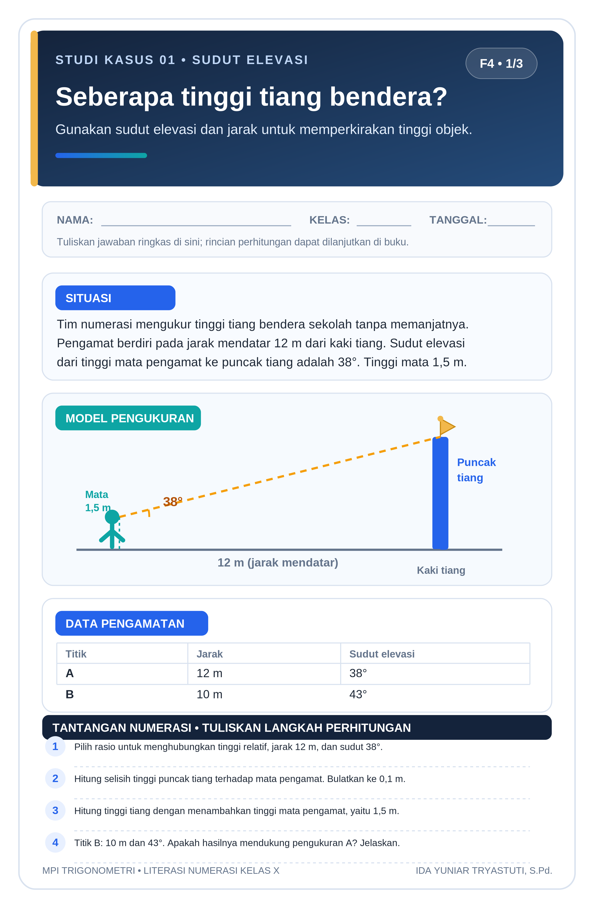
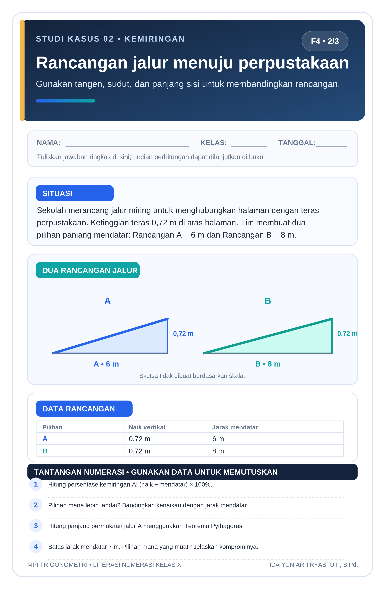
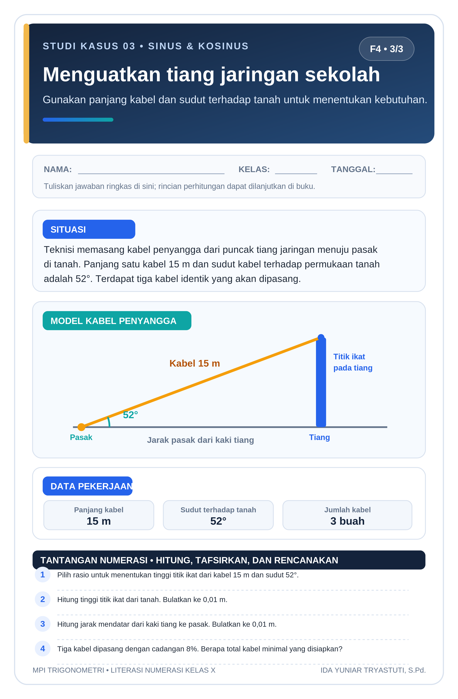

Memahami
Mengenali sudut elevasi, sudut depresi, dan sisi pada segitiga siku-siku.
Matematika bukan sekadar rumus. Gunakan perbandingan trigonometri untuk membaca situasi nyata, mengolah data, dan mengambil keputusan yang masuk akal.
Mengenali sudut elevasi, sudut depresi, dan sisi pada segitiga siku-siku.
Memilih sinus, kosinus, atau tangen sesuai data yang diketahui.
Membaca tabel, membandingkan hasil, dan memeriksa kewajaran jawaban.
Untuk sudut lancip θ pada segitiga siku-siku, tentukan dulu posisi sisi depan, samping, dan miring. Nama rasio mengikuti pasangan sisi yang digunakan.
Menghubungkan sisi depan dengan sisi miring.
Menghubungkan sisi samping dengan sisi miring.
Menghubungkan tinggi relatif dengan jarak mendatar.
Ingat: gunakan mode DEG (derajat) pada kalkulator ketika sudut ditulis dalam °. Untuk mencari tinggi dari jarak mendatar dan sudut elevasi, tangen sering menjadi pilihan yang tepat.
Bayangkan kamu mengukur tinggi tiang. Ubah sudut elevasi dan jarak pengamat untuk melihat bagaimana perkiraan tinggi ikut berubah.
Hasil merupakan estimasi matematis. Ketelitian dipengaruhi ketepatan pengukuran sudut, jarak, dan tinggi mata.
Baca situasi, cermati data, lalu selesaikan persoalan. Jawaban numerik menerima tanda koma maupun titik desimal. Berikan perhatian pada satuan dan pembulatan.
Jawab dan periksa pertanyaan pada ketiga studi kasus. Skor akan bertambah sesuai jawaban yang benar.
Apa yang sedang diukur atau dibandingkan?
Tandai sudut, sisi, data, dan satuannya.
Tentukan sin, cos, atau tan berdasarkan sisi yang diketahui.
Periksa pembulatan dan apakah hasilnya masuk akal.
Tiga lembar studi kasus tersedia sebagai gambar PNG ukuran 21,6 × 33 cm (F4), resolusi 300 dpi. Unduh per kasus atau cetak seluruh lembar.

Lihat ukuran penuh ↗
Lihat ukuran penuh ↗
Lihat ukuran penuh ↗i Saat mencetak, pilih ukuran kertas F4/Folio (21,6 × 33 cm), skala 100% atau “ukuran sebenarnya”, dan nonaktifkan header/footer browser.